A First Look at Transactions
Data Science 310 — Boston University
Based on notes by David G. Sullivan
Transactions: An Overview
- A transaction is a sequence of operations that is treated as a single logical operation. (abbreviation = txn)
- Example: a balance transfer
transaction T1
read balance1
write(balance1 - 500)
read balance2
write(balance2 + 500)
- Transactions are all-or-nothing: all of a transaction’s changes take effect or none of them do.
Executing a Transaction
- Issue a command indicating the start of the transaction.
- Perform the operations in the transaction.
- in SQL: SELECT, UPDATE, etc.
- End the transaction in one of two ways:
- commit it: make all of its results visible and persistent
- all of the changes happen
- roll it back / abort it: undo all of its changes, returning to the state before the transaction began
- none of the changes happen
Why Do We Need Transactions?
- To prevent problems stemming from system failures.
- example: a balance transfer
read balance1
write(balance1 - 500)
CRASH
read balance2
write(balance2 + 500)
Why Do We Need Transactions? (cont.)
- To ensure that operations performed by different users don’t overlap in problematic ways.
- example: this should not be allowed
user 1
read balance1
write(balance1 - 500)
read balance2
write(balance2 + 500)
user 2
read balance1
read balance2
if (balance1 + balance2 < min)
write(balance1 - fee)
ACID Properties
- A transaction has the following “ACID” properties:
- Atomicity: either all of its changes take effect or none do
- Consistency preservation: its operations take the database from one consistent state to another
- consistent = satisfies the constraints from the schema, and any other expectations about the values in the database
- Isolation: it is not affected by and does not affect other concurrent transactions
- Durability: once it commits, its changes survive failures
- The user plays a role in consistency preservation.
- ex: add to balance2 the same amnt subtracted from balance1
- the DBMS helps by rejecting changes that violate constraints
Atomicity and Durability
- These properties are guaranteed by the part of the system that performs logging and recovery.
- After a crash, the recovery subsystem:
- redoes as needed all changes by committed txns
- undoes as needed all changes by uncommitted txns
- restoring the old values of the changed data items
- We’ll look more at logging and recovery later in the semester.
Isolation
- To guarantee isolation, the DBMS has to prevent problematic interleavings like the one we saw earlier:
transaction T1
read balance1
write(balance1 - 500)
read balance2
write(balance2 + 500)
transaction T2
read balance1
read balance2
if (balance1 + balance2 < min)
write(balance1 - fee)
- One possibility: enforce a serial schedule (no interleaving).
- doesn’t make sense for performance reasons. why?
Serializability
- A serializable schedule is one whose effects are equivalent to the effects of some serial schedule. For example:
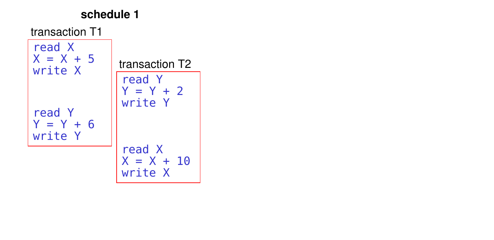
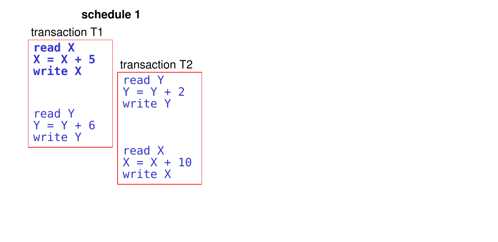
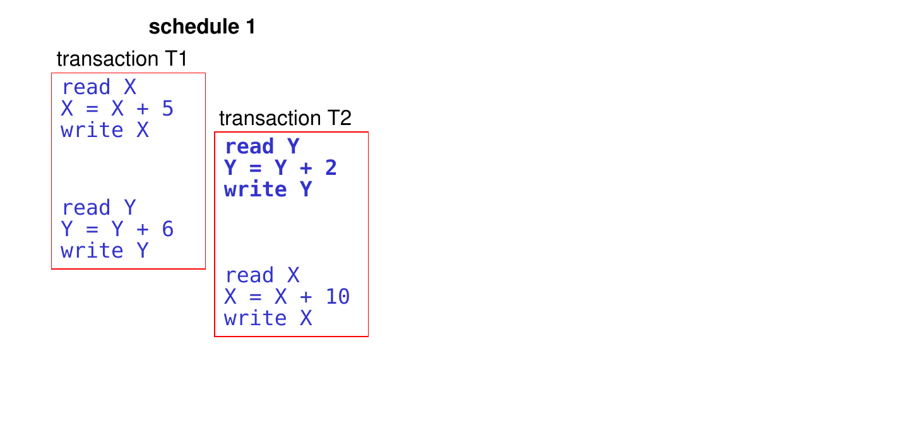
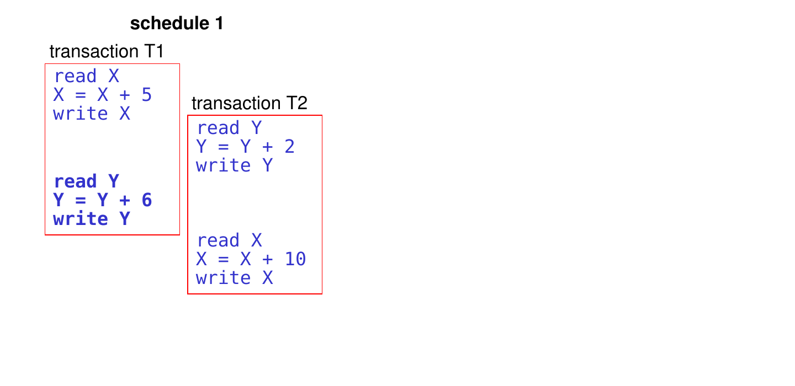
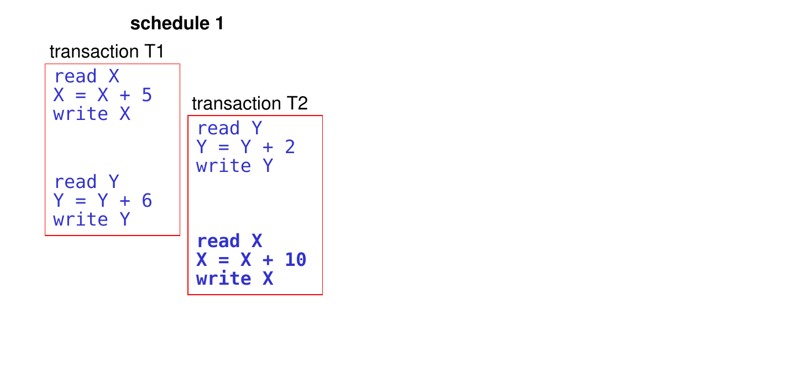
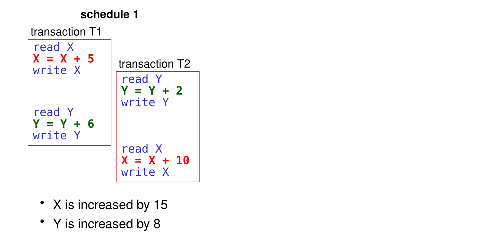
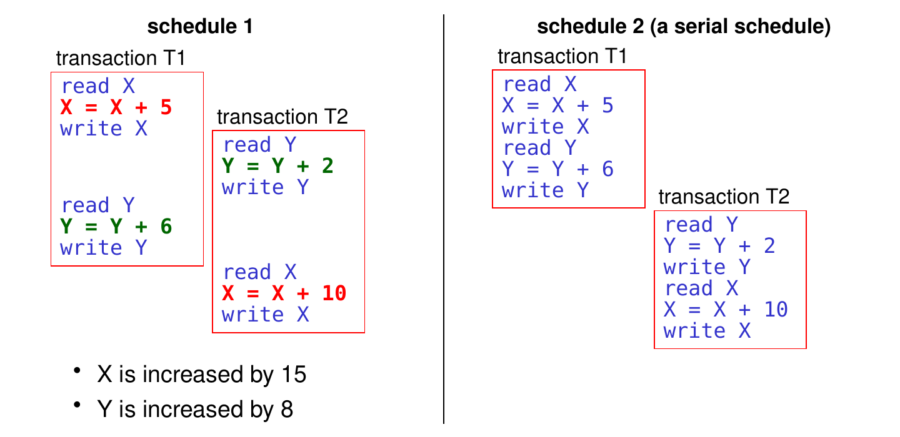
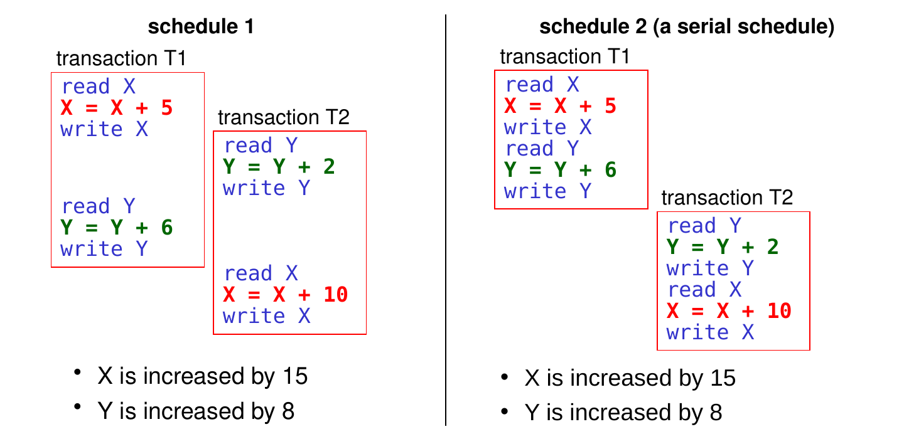
- Because the effects of schedule 1 are equivalent to the effects of a serial schedule (schedule 2), schedule 1 is serializable.
Not All Schedules Are Serializable!
- Schedule 1 is a special case.
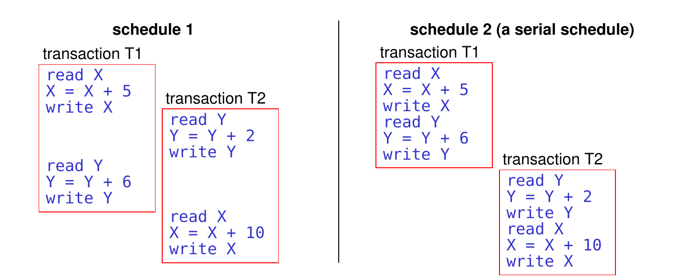
- both T1 and T2 use addition to change the values of X and Y
- thus, the order in which T1 and T2 make their changes doesn’t matter!
Not All Schedules Are Serializable! (cont.)
- If we change T2 so that it uses multiplication, the original interleaving is no longer serializable.
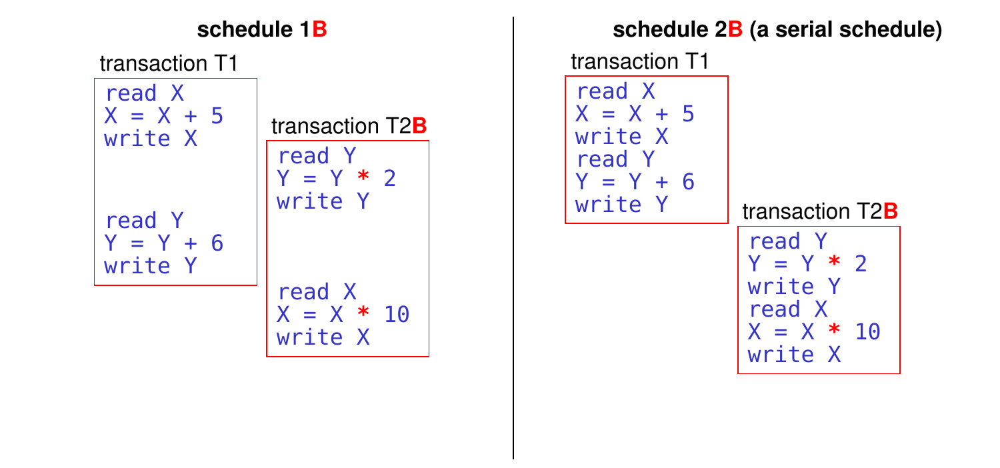
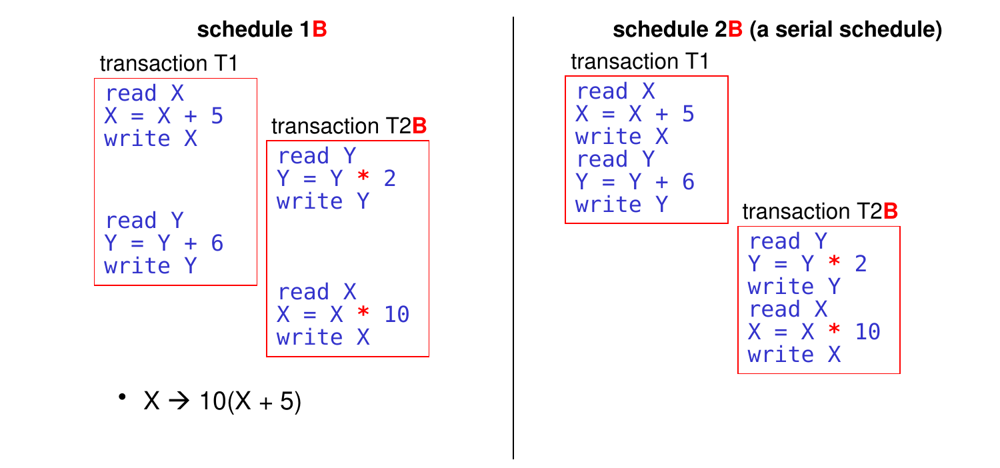
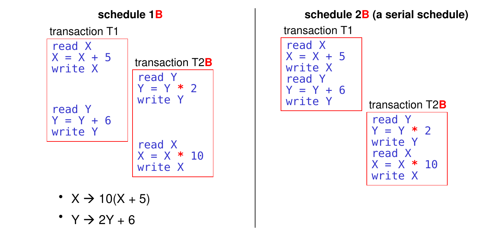
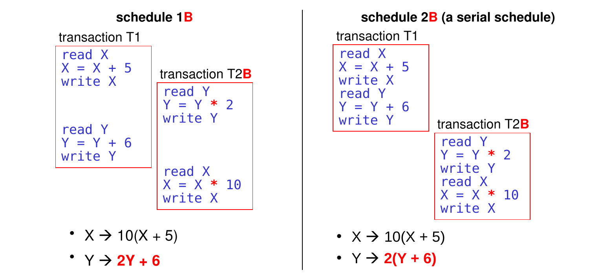
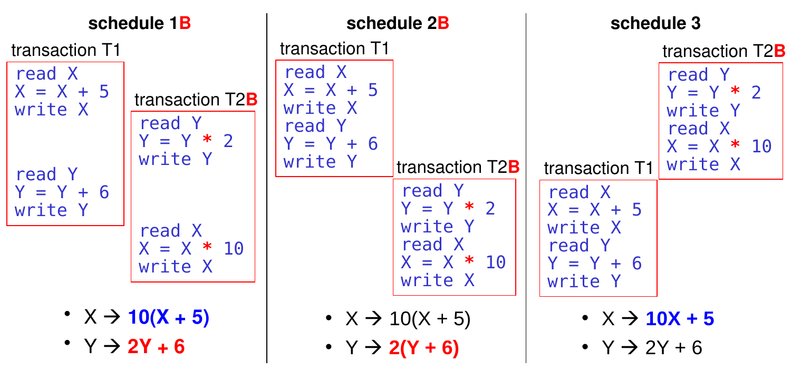
- Because effects of schedule 1B are not equivalent to the effects of any serial schedule of T1 + T2B, schedule 1B is not serializable.
Conventions for Schedules
- We abstract all transactions into sequences of reads and writes.
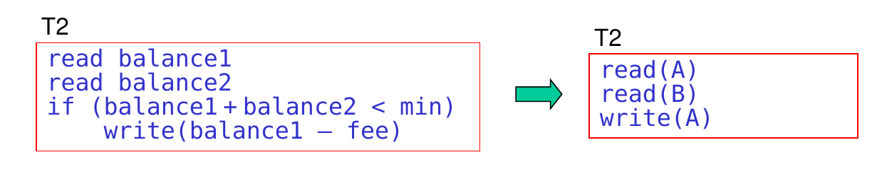
- we use a different variable for each data item that is read or written
- we ignore:
- the actual meaning and values of the data items
- the nature of the changes that are made to them
- things like comparisons that a transaction does in its own address space
Conventions for Schedules (cont.)
- We can represent a schedule using a table.
- one column for each transaction
- operations are performed in the order given by reading from top to bottom
- We can also write a schedule on a single line using this notation:
- ri(A) = transaction Ti reads A
- wi(A) = transaction Ti writes A
- example for the table above:
r1(A); r2(B); w1(A); r2(A); w2(A)
Which of the following expresses this schedule?
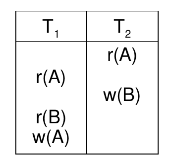
A. r1(A); r2(A); w1(B); r2(B); w2(A)
B. r2(A); w2(B); r1(A); r1(B); w1(A)
C. r1(A); r1(B); w1(A); r2(A); w2(B)
D. r2(A); r1(A); w2(B); r1(B); w1(A) ← correct!
E. none of the above
Serializability of Abstract Schedules
- How can we determine if an abstract schedule is serializable?
- given that we don’t know the exact nature of the changes made to the data
- We focus on the following:
- which transaction is the last one to write each data item
- that’s the version that will be seen after the schedule
- which version of a data item is read by each transaction
- assume that if a transaction reads a different version, its subsequent behavior might be different
Conflicts in Schedules
- A conflict is a pair of actions that can’t be swapped without potentially changing the behavior of one or more transactions.
- Examples in the schedule at right:
- w1(A) and r2(A)
- swapping them leads T2 to read a different value of A
- this may cause T2 to behave differently
- w2(B) and w1(B)
- swapping them means later readers of B will see a different value of B
- this may cause them to behave differently
- r1(B) and r2(B) do not conflict. why?
- swapping them doesn’t affect the value of B that txns see
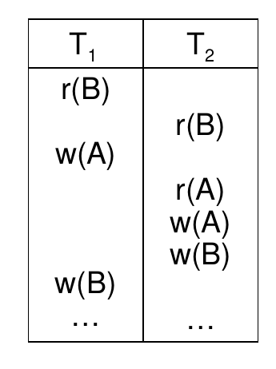
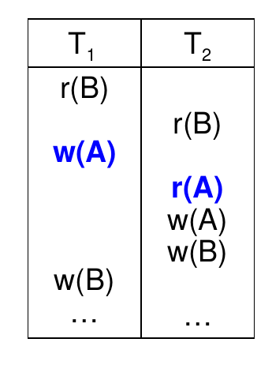
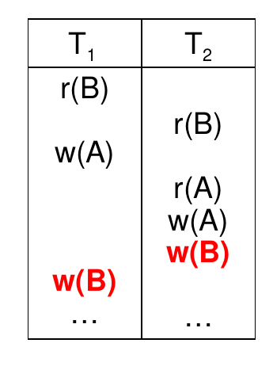
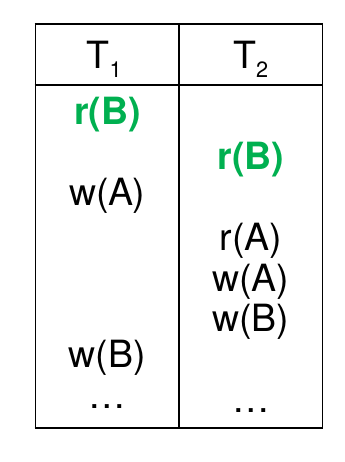
Which Actions Conflict?
- Actions in different transactions conflict if: 1) they involve the same data item and 2) at least one of them is a write
- Pairs of actions that do conflict (assume i != j):
- wi(A); rj(A) — the value read by Tj may change if we swap them
- ri(A); wj(A) — the value read by Ti may change if we swap them
- wi(A); wj(A) — subsequent reads may change if we swap them
- two actions from the same txn (their order is fixed by the client)
- Pairs of actions that don’t conflict:
- ri(A); rj(A) – two reads of the same item by different txns
- operations on two different items by different txns:
- ri(A); rj(B)
- ri(A); wj(B)
- wi(A); rj(B)
- wi(A); wj(B)
Conflict Serializability
- Rather than ensuring serializability, it’s easier to ensure a stricter condition known as conflict serializability.
- A schedule is conflict serializable if we can turn it into a serial schedule by swapping pairs of consecutive actions that don’t conflict.
Example of a Conflict Serializable Schedule
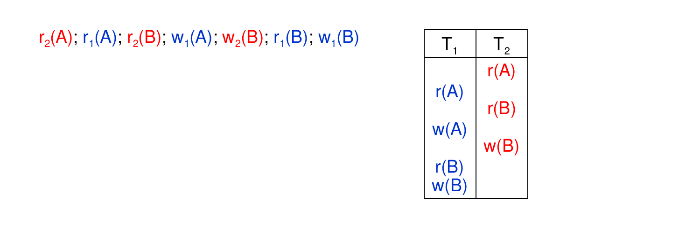
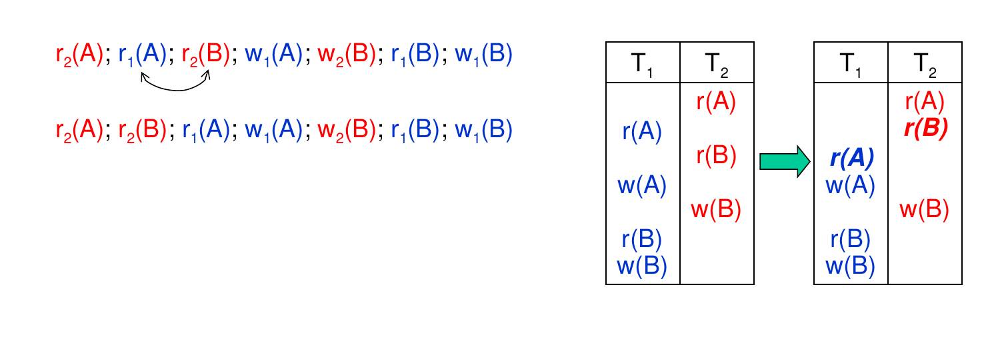
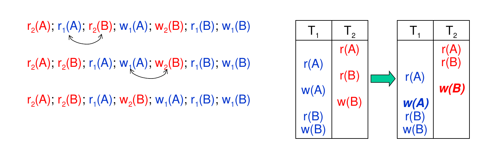
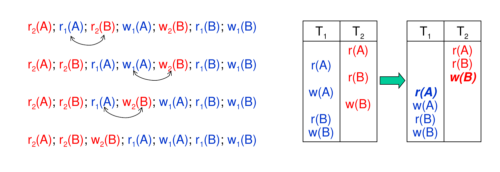
- The final schedule is referred to as an equivalent serial schedule.
- serial – all of T2, followed by all of T1
- equivalent – it produces the same results as the original schedule
Testing for Conflict Serializability
- Because conflicting pairs of actions can’t be swapped, they impose constraints on the order of the txns in an equivalent serial schedule.
- example: if a schedule includes w1(A) … r2(A), T1 must come before T2 in any equivalent serial schedule
- To test for conflict serializability:
- determine all such constraints
- make sure they aren’t contradictory
- Example: r2(A); r1(A); r2(B); w1(A); w2(B); r1(B); w1(B)
- r2(A) … w1(A) means T2 must come before T1
- r2(B) … w1(B) means T2 must come before T1
- w2(B) … r1(B) means T2 must come before T1
- w2(B) … w1(B) means T2 must come before T1
- no contradictions, so this schedule is equivalent to the serial ordering T2;T1
- Thus, this schedule is conflict serializable.
Testing for Conflict Serializability (cont.)
- What about this schedule? r1(B); w1(B); r2(B); r2(A); w2(A); r1(A)
- Which of the following pairs of actions from this schedule conflict?
A. r1(B); r2(B) — don’t conflict – both are reads
B. r1(B); w2(A) — don’t conflict – they involve different data items
C. w1(B); r2(B) — conflict – same item, at least one write
D. r2(B); r2(A) — conflict – by the same txn, so can’t reorder
E. w2(A); r1(A) — conflict – same item, at least one write
Testing for Conflict Serializability (cont.)
- What about this schedule? r1(B); w1(B); r2(B); r2(A); w2(A); r1(A)
- What constraints do C and E impose on any equivalent serial schedule?
A. r1(B); r2(B)
B. r1(B); w2(A)
C. w1(B); r2(B) — T1 must come before T2
D. r2(B); r2(A)
E. w2(A); r1(A) — T2 must come before T1
- Thus, this schedule is not conflict serializable.
Using a Precedence Graph
- Tests for conflict serializability can use a precedence graph.
- the vertices/nodes are the transactions
- add an edge for each precedence constraint: T1 → T2 means T1 must come before T2 in an equivalent serial schedule
- Example: r2(A); r3(A); r1(B); w4(A); w2(B); r3(B)
- r2(A) … w4(A) means T2 → T4
- r3(A) … w4(A) means T3 → T4
- r1(B) … w2(B) means T1 → T2
- w2(B) … r3(B) means T2 → T3
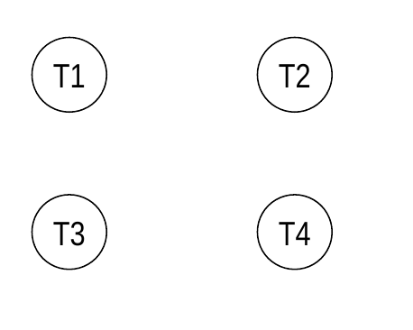
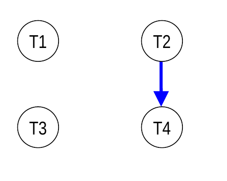
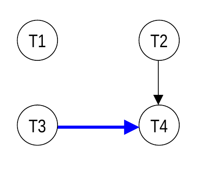
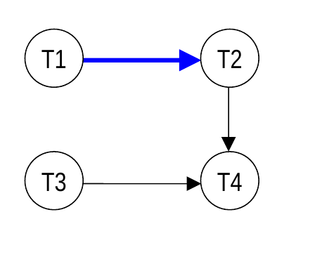
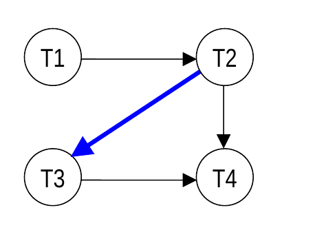
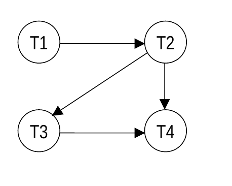
- After the graph is constructed, we test for cycles (i.e., paths of the form A → … → A).
- if the graph is acyclic, the schedule is conflict serializable
- use the constraints to determine an equivalent serial schedule (in this case: T1;T2;T3;T4)
- if there’s a cycle, the schedule is not conflict serializable